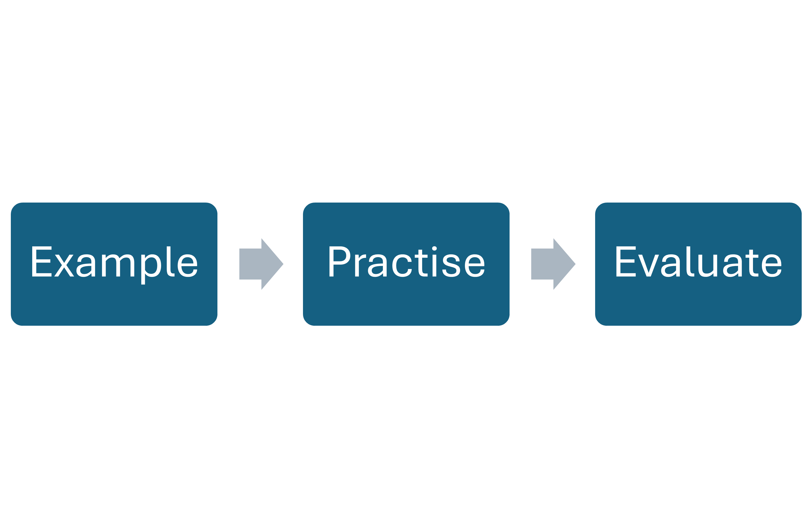

My lessons start by discussing your goals. I recommend two approaches if you are unsure: guiding you through material with practice and feedback, followed by completing similar questions together for additional support, or working independently, then reviewing any mistakes in the next session so that you can really test your applied knowledge.

Background
I have 2 first-class degrees in Mathematics at a Russell Group University, a publication, and 2 years of experience tutoring maths. I specialize in helping students understand complex concepts, develop problem-solving skills, and prepare for exams at various levels, ensuring tailored approaches to suit individual learning styles.
Experience
I have two years of experience tutoring mathematics at both GCSE, teaching individuals and groups through an online platform and in person. I focus on helping students with homework, teaching new material, and reinforcing previously taught concepts to ensure they understand the information better.
"George made maths easy to understand!" - Einstein
"Thanks to George's help, I now have £4.3 million!" - Client 2
Contacts
If you're interested in GCSE maths tutoring, then please get in touch by: